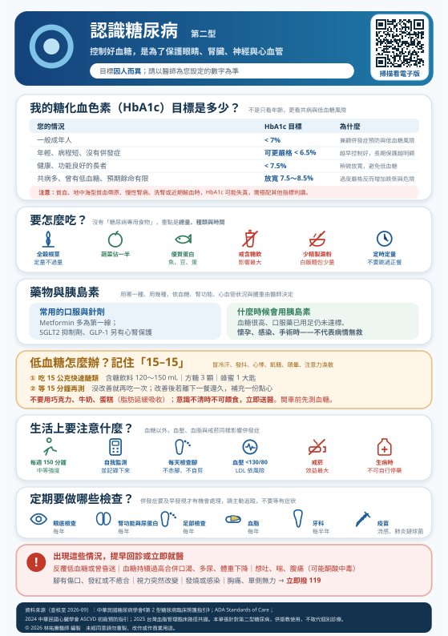

控制血糖不是為了讓報告好看，而是為了保住眼睛、腎臟、神經、心臟與雙腳。
這一頁說明您的目標數字怎麼訂、怎麼吃、藥在做什麼、低血糖怎麼處理，以及什麼時候不能等。
本頁針對第二型糖尿病撰寫。第一型糖尿病在用藥順序、胰島素依賴程度與酮酸中毒風險上都不同，請以您的主治醫師說明為準。
本頁有表格，在手機上若看不到完整欄位，請用手指在表格區域左右滑動即可看到全部內容。
吃進去的食物會變成葡萄糖進入血液，而要讓葡萄糖進到細胞裡被利用，需要一把鑰匙——胰島素。
第二型糖尿病的問題出在兩個地方，而且通常同時存在：
糖化血色素（HbA1c）反映的是最近 2～3 個月的平均血糖，所以單次血糖高低不會立刻反映在上面。一般建議每 3 個月追蹤一次，穩定後可延長。
目標不是只看年齡，更要看預期餘命、共病嚴重度、低血糖風險、病程長短、有沒有血管併發症，以及您的自我照顧能力與家人支持。
| 您的情況 | 一般目標 | 為什麼這樣訂 |
|---|---|---|
| 一般成年人 | < 7% | 兼顧併發症預防與低血糖風險，是最常見的起點 |
| 年輕、病程短、沒有併發症、低血糖風險低 | 可更嚴格 < 6.5% | 越早把血糖控制好，長期對眼睛腎臟的保護越明顯（所謂「代謝記憶」） |
| 健康、功能良好的長者 | < 7.5% | 稍微放寬，降低低血糖與跌倒的機會 |
| 共病多、功能受限、曾有嚴重低血糖、預期餘命有限 | 放寬至 7.5～8.5% | 過度嚴格反而有害：低血糖造成的跌倒、心律不整風險，可能大於血糖稍高的長期傷害 |
| 懷孕或計畫懷孕 | 另有更嚴格的標準 | 需由婦產科與新陳代謝科共同管理，部分藥物要更換 |
HbA1c 測的是「糖分黏在紅血球上的比例」，所以只要紅血球的壽命或數量不正常，數值就會失真：
這些情況下，醫師會搭配自我血糖紀錄、空腹與飯後血糖，或糖化白蛋白等其他指標一起判讀。如果您有上述情況，不要只看 HbA1c 這個數字自我評價。
| 時間點 | 一般目標 | 看什麼 |
|---|---|---|
| 空腹（早餐前） | 約 80～130 mg/dL | 反映基礎血糖與睡眠中的控制 |
| 飯後 1～2 小時 | 約 < 180 mg/dL | 反映這一餐吃的份量與種類是否合適 |
| 睡前 | 依醫師設定 | 用胰島素或磺醯脲類者，用來避免夜間低血糖 |
與其隨便測，不如測「同一餐的飯前與飯後兩小時」——這樣才知道是哪一餐、哪一種食物讓血糖跑上去。把結果記下來（紙本或手機都行），回診時帶給醫師看，比單一個 HbA1c 數字有用得多。
用胰島素或磺醯脲類的人，還要在開車前、運動前、覺得不舒服時加測。
貼片式的感測器可以每幾分鐘記錄一次組織間液的糖值，看得到趨勢與夜間變化，是傳統指尖血糖看不到的。常用的指標是「達標時間（TIR）」——血糖落在 70～180 mg/dL 的時間比例，一般建議超過 70%。
CGM 對使用胰島素、血糖波動大、或有無感覺低血糖的人幫助最大。健保給付有條件限制，多數情況需自費，實際請向醫療團隊確認。
沒有「糖尿病專用食物」，也沒有哪一樣東西絕對不能吃。真正決定血糖的是總量、種類與時間。標示「無糖」「健康」的食品，澱粉和熱量一樣會讓血糖上升。
| 常見狀況 | 為什麼要留意 | 可以怎麼做 |
|---|---|---|
| 含糖手搖飲 | 對血糖影響最直接、最大。半糖、微糖仍然是糖 | 改喝無糖茶或白開水。這一項改掉，效果常常比多吃一顆藥明顯 |
| 白飯、麵、粥、吐司 | 精製澱粉吸收快，飯後血糖衝得高 | 換成糙米、五穀飯；份量固定；粥比乾飯更容易升糖 |
| 水果當「健康的」吃到飽 | 水果有果糖，一樣算醣類 | 每天約 2 份（1 份約一個拳頭大）；整顆吃，不要打成果汁 |
| 地瓜、南瓜、玉米、芋頭 | 很多人當「菜」吃，其實是主食 | 吃了這些，白飯就要減量 |
| 勾芡、羹湯、醬料 | 藏有大量澱粉與糖 | 湯少喝，醬料另外放 |
| 不吃早餐或跳過正餐 | 容易低血糖，也容易下一餐吃過量 | 定時定量比少吃一餐更重要 |
每個人的體重、活動量、腎功能、用藥、共病與生活作息都不同，份量該吃多少、外食怎麼選、要不要限制蛋白質或鉀離子，都需要個別化。
請務必安排一次糖尿病衛教師或營養師的個別諮詢，由他們依您的檢驗數值與生活型態量身調整。多數醫院的糖尿病照護網都有這項服務，健保有給付，可以直接向您的醫師提出。
本頁提供的是原則性方向，不能取代個別的飲食指導。
同樣一份餐點，先吃菜與蛋白質、最後吃主食，飯後血糖的上升幅度通常會比較平緩。這是零成本、不用改變食物內容就能做的調整。
糖尿病用藥近年變化很大。現在選藥不只看血糖，還要看您的心臟、腎臟與體重——有些藥被證實能減少心血管事件與腎病惡化，即使血糖差不多也會優先使用。
| 藥物類別 | 它在做什麼 | 要注意的地方 |
|---|---|---|
| Metformin （雙胍類） | 減少肝臟製造葡萄糖、改善胰島素敏感度。多數人的第一線用藥 | 腸胃不適（可隨餐、由低劑量慢慢加）；長期使用可能影響維生素 B12；腎功能不好要調整或停用；做顯影劑檢查前後依指示暫停 |
| SGLT2 抑制劑 | 讓多餘的糖從尿液排出。另有明確的心臟與腎臟保護效果，也能減輕體重與血壓 | 泌尿道與生殖器黴菌感染（多喝水、注意清潔）；脫水與姿勢性低血壓；生病、禁食、手術前需暫停（見第 9 節） |
| GLP-1 受體促效劑 （多為針劑，部分口服） | 促進進食後的胰島素分泌、延緩胃排空、抑制食慾。有心血管保護效果，減重效果明顯 | 噁心、嘔吐、腹瀉（從低劑量慢慢加會改善）；少見但需注意胰臟炎；健保給付有條件 |
| DPP-4 抑制劑 | 延長體內腸泌素作用，溫和促進胰島素分泌 | 耐受性好、單獨使用低血糖風險低；對體重影響中性 |
| 磺醯脲類 （Sulfonylurea） | 直接刺激胰臟分泌胰島素，降糖效果快 | 低血糖風險最高的口服藥，長者與腎功能不佳者尤其要小心；可能增加體重。不吃飯就不要自行服用，請先問醫師 |
| Pioglitazone （TZD） | 改善胰島素阻抗 | 可能水腫、體重增加；心衰竭者不建議；長期使用注意骨折風險 |
| α-葡萄糖苷酶抑制劑 | 延緩腸道吸收醣類，主要降飯後血糖 | 脹氣、排氣多。合併此藥發生低血糖時，要用葡萄糖而不是蔗糖 |
因為選藥要同時考慮：有沒有心血管疾病或心衰竭、腎功能如何、體重、低血糖風險、會不會影響工作或開車、以及健保給付條件。同樣是第二型糖尿病，兩個人的處方可以完全不同。不要自行比照親友的藥。
需要打胰島素，不代表你的病「沒救了」，也不代表你之前做得不好。
第二型糖尿病的胰島素分泌能力會隨時間自然下降，這是疾病本身的進程。而且有些情況是暫時的——例如感染、手術期間用胰島素控制，之後可以改回口服藥。
這是糖尿病治療最常見也最危險的急性問題。處理方式必須您自己會，而且家人也要知道。
冒冷汗、發抖、心悸、突然很餓、頭暈、無力、嘴唇發麻、視線模糊、注意力渙散、講話含糊、情緒變得暴躁。
特別注意：病程長的人、長者、或反覆低血糖的人，警告症狀可能變鈍甚至完全消失（無感覺低血糖），等發現時已經意識不清。這類病人更需要規律監測，血糖目標也要放寬。
| 可以用 | 不要用 | |
|---|---|---|
| 15 公克快速醣類 | 含糖飲料 120～150 mL（一般養樂多、果汁、汽水） 方糖 3 顆或砂糖 1 大匙泡水 蜂蜜 1 大匙 市售葡萄糖片 | 巧克力、牛奶、蛋糕、餅乾 ——含脂肪會延緩糖分吸收，救不了急 無糖或代糖的飲料完全沒有用 |
如果人已經意識不清、叫不醒或抽搐，絕對不要餵食物或灌水——會嗆到、造成吸入性肺炎。立即撥打 119。
若醫師有開立升糖素（glucagon），請家人事先學會怎麼用，並確認放置位置與效期。
不要只是「吃糖解決就算了」。常見原因：忘記吃飯或延誤用餐、藥量太多、運動量突然增加、喝酒、腎功能變差。反覆低血糖代表治療需要調整，請把發生的時間、當時在做什麼、血糖數值記下來，回診時告訴醫師。
特別提醒：使用 α-葡萄糖苷酶抑制劑的人發生低血糖時，要用葡萄糖（不能用蔗糖、方糖），因為這類藥會延緩蔗糖的分解吸收。
這一節很多衛教資料會漏掉，但臨床上出事常常就在這些時候。
糖尿病人最常見的死因不是血糖本身，而是心肌梗塞與中風。研究一再顯示，同時控制血糖、血壓、血脂並戒菸，對減少併發症的效果遠大於只把血糖壓低。
| 項目 | 一般目標 | 備註 |
|---|---|---|
| 血壓 | 一般 < 130 / 80 mmHg | 在家量並記錄；長者或姿態性低血壓者由醫師個別設定 |
| 壞膽固醇 LDL | 高風險 < 100； 已有心血管疾病等極高風險者 < 70 或更低 | 糖尿病本身就屬心血管高風險族群，詳見認識膽固醇 |
| 體重 | 先以減少 5～10% 為目標 | 不必一步到位，減下來就有效果 |
| 抽菸 | 完全戒除 | 抽菸會加速腎病變、神經病變與血管阻塞；各院都有戒菸門診，健保有補助 |
糖尿病的併發症在造成症狀之前，就已經默默進行好幾年。定期篩檢的目的，是在還可以處理的階段抓到它。
| 檢查項目 | 頻率 | 為什麼 |
|---|---|---|
| 眼底檢查 | 每年（已有病變者更頻繁） | 糖尿病視網膜病變早期完全沒有症狀，等到看不清楚常常已經較嚴重。及早治療可以保住視力 |
| 腎功能 尿液白蛋白／肌酸酐比值（UACR）＋ eGFR | 每年 | 早期腎病變只能靠驗尿發現。及早用藥可以延緩惡化，避免走到洗腎 |
| 足部檢查 | 每年；高風險者每次回診 | 檢查感覺神經、血流與皮膚。神經病變會讓你感覺不到受傷 |
| 血脂 | 每年 | 評估心血管風險與用藥調整 |
| 牙科 | 每半年 | 牙周病與血糖是互相惡化的關係；牙周治療後血糖常會改善 |
| 疫苗 | 依建議接種 | 流感、肺炎鏈球菌、COVID-19。糖尿病人感染後的併發症風險較高 |
三件事同時發生：神經病變讓你感覺不到痛、血流變差讓傷口不易癒合、血糖高讓細菌容易滋生。結果就是——一個自己沒注意到的小傷口，可能在幾週內演變成需要截肢的感染。
好消息是：這是可以預防的，而且方法很簡單。
第二型糖尿病目前無法根治，但可以控制得很好。有一部分人——特別是診斷初期、體重明顯減輕的人——血糖能回到正常範圍而暫時不需要用藥，這稱為緩解。但這不等於痊癒，仍然需要定期追蹤，因為血糖可能再度上升。任何停藥都必須由醫師評估。
這是最常見的誤解之一。真正傷腎的是長期控制不好的高血糖，不是降血糖藥。事實上SGLT2 抑制劑等藥物反而被證實可以保護腎臟、延緩腎病惡化。醫師會依您的腎功能選擇與調整劑量。因為怕傷腎而自行停藥，才是真正傷腎的做法。
可以，但要算進當天的醣類總量。水果每天約 2 份、分開吃、整顆吃不要打汁。真的想吃甜食，建議放在正餐後而不是單獨吃，血糖波動會小一些。真正該戒的是含糖飲料。
建議限制。酒精會抑制肝臟釋放葡萄糖，可能造成延遲性低血糖——有時是喝完幾小時後、睡著時才發生，而且症狀容易被誤認為喝醉。如果要喝，務必配著食物、不要空腹，並在睡前測血糖。
因為血糖好，正是藥在作用的結果。這和高血壓一樣，停藥之後數值通常會回去，而血管、腎臟與眼睛的傷害是累積的、不可逆的。控制的目的是防止十年後的併發症，不是讓現在舒服。
使用胰島素或磺醯脲類的人建議要有。選購時注意是否通過認證、試紙是否容易取得且價格合理。重點不是機器多貴，而是有沒有規律地測、有沒有記錄下來、有沒有帶去給醫師看。
本頁內容依下列臨床指引編寫，並針對台灣一般民眾的用語與就醫情境改寫（查核至 2026 年 9 月）：
本頁為一般衛教資訊，不能取代個別診療，且僅適用於第二型糖尿病。文中的目標數字為一般建議值；您的年齡、共病、腎功能、低血糖風險與用藥都會影響實際目標，請以主治醫師的評估為準。
本頁不提供任何藥物劑量建議，也不可據以自行調整或停用任何藥物（包含胰島素）。
若出現意識不清、抽搐、嘔吐合併腹痛與呼吸急促、胸痛或單側無力，請立即就醫或撥打 119。
